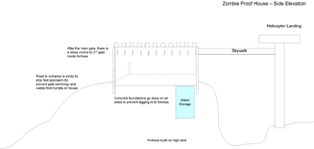

This week we are looking at what sort of things you can do to design a house which is protected from zombie attacks. While not practical, it shows up some interesting methods and design tips to consider.

Key Design Requirements
The first thing to think about is the site - it should be on a hill with clearly visible views from all sides. The slope should be as steep as possible on all three sides except for the main entrance.
After that, there needs to be fairly dense ring of trees, the idea is that zombies far away from the house wont see it from a distance - they have to stagger through the forest to actually see the house. This is really the first line of defence - if you cant be seen easily, you wont attract a large swarm of zombies.

As an emergency exit, there should be a high elevated skywalk to another structure, such as for a helicopter, or at least another way to escape if the zombies over run the main gate.
{kind=link}
The side elevation shows the ramp between the gates, and the 'floor level' inside the house is actually well elevated, with the concrete walls extending back down to real ground level. This means that the small external facing windows at the top of the outside corridors are too high to be reached from the outside, but allows for defensive positions.
{kind=link}
The floorplan shows a fairly simple outside layout - there is no low windows and all external walls are triple thickness to withstand thousands of zombies crushing against them. The main entrance has an externally opening steel and concrete gate followed by a steep incline to a 2nd gate (same as first gate). These gates are only opened one at a time to prevent the zombies slipping in when your group returns from scrounging supplies (or whatever it is people do in a post zombie world).
The layout of the house is that ALL rooms have 2 exits, because as we know from all zombie movies - eventually they will break in, and you'll need to run around escaping. With multiple exits you should be able to outrun them and via the various corridors in the house you can make your way to a weapons cache, or if neccessary to the helipad exit.